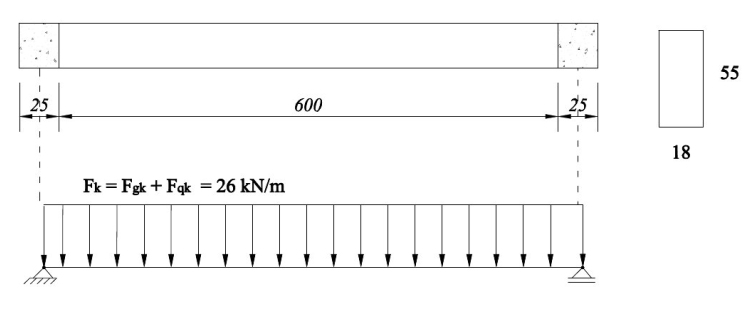

Viga retangular com armadura dupla
Neste tópico será apresentado um exemplo completo de dimensionamento
Exemplo
Dimensionar a viga de concreto armado da figura abaixo, biapoiada, considerando carregamento linearmente distribuído e os seguintes dados:
- Concreto C20;
- Aço CA-50;
- Classe de agresividade amiental II;
- \(d_{max} = 19\) mm (brita 1 - diâmetro máximo caracteristico do agregado);
- \(\phi_t = 5 \) mm (diâmetro do estribo)
- Coeficientes de ponderação para as combinações normais de carregamento.

Planta de formas do exemplo
Solução
Será demonstrado apenas a condição de cálculo considerando o uso das tabelas de Pinheiro (coeficientes K).
\[l_{ef} = 620 \text{ cm}\] \[ M_k = F_k \cdot L^2 /8 = 26 \cdot 6{,}20^2/8 = 126{,}95 \text{ kNm} \] \[ M_d = \gamma_f M_k = 1{,}4 \cdot 126{,}95 = 177{,}73 \text{ kNm} \]Não se conhece o valor da altura útil (d) a priore. Neste caso, deve-se fazer uma estimativa.
Valor adotado de d = 49 cm.
\[x_{2,lim} = 0{,}26d = 12{,}74 \text{ cm} \] \[x_{3,lim} = 0{,}63d = 30{,}87 \text{ cm} \] \[K_c = \frac{b_w d^2}{M_d} = \frac{18 \cdot 49^2}{17773} = 2{,}43 \text{cm²/kN} \]Da tabela A-1, para Concreto C20 e aço CA-50 encontramos:
\[ \beta_x =0{,}54 \rightarrow \text{ Não atende!} \](Lembrando que \(\beta_x \le 0{,}45 \))
Neste caso, procederemos os cáculos com a consideração de armadura dupla, assim, devemos adotar, para a armadura tracionada:
\[ \beta_x = 0{,}45 \]Logo
\[K_c = K_{c,lim} = 2{,}8 \text{ kN/cm²} \rightarrow \text{ (Ver Tabela A-1)} \] \[M_{1,d} = \frac{b_w d^2}{K_{c,lim}} = \frac{18 \cdot 49^2}{2{,}8} =15.435 \text{ kNcm} \] \[M_{2,d} = M_d - M_{1,d} = 17.773 - 15.435 = 2.338 \text{ kNcm} \] \Armadura tracionada
Adotando d' = 3,5 cm:
\[ A_s = K_{s,lim} \frac{M_{1,d}}{d} + \frac{M_{2,d}}{f_{yd}(d - d')} \] \[ A_s = 0{,}028 \frac{15.435}{49}+\frac{2.338}{43{,}5(49-3{,}5)} = 10{,}00 \text{ cm²} \]